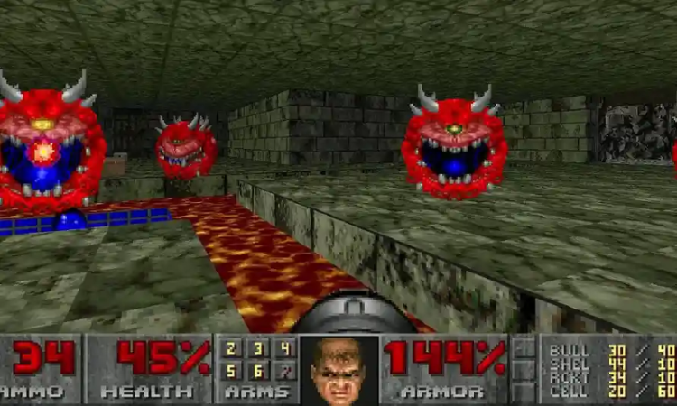

Doom 30 years in the making.
This is a screenshot of Doom, released in 1993.
This is a screenshot of Doom Eternal, released in 2020.
The difference is impressive, but many of the techniques used in the original doom can still be applied today. One of the technologies that contributed to increase in graphical quality is dedicated graphics hardware that enables us to process lots of data at the same time.
Welcome to this Graphics Pipeline Demonstration
This brief overview of graphics hardware has been created to give you an interactive experience that allows you to experiment with some exciting technology in an accessible.
Throughout the demonstration you will have clear instructions on what to do to get the desired effect, whilst also having freedom to experiment with other things to help you understand what is going on.
In this demonstration we will use WebGL based examples to run code from within the browser on your graphics card. You will edit some of the code to add a first person camera so that you can explore a scene, add per-pixel lighting to the scene.
DON'T PANIC!
This is based on content we usually cover in the Second Year.
The will be some code and some maths. As part of your degree we will cover both the code and the maths in far greater depth.
Just relax, and have fun! and if you have any feedback I would love to hear it.